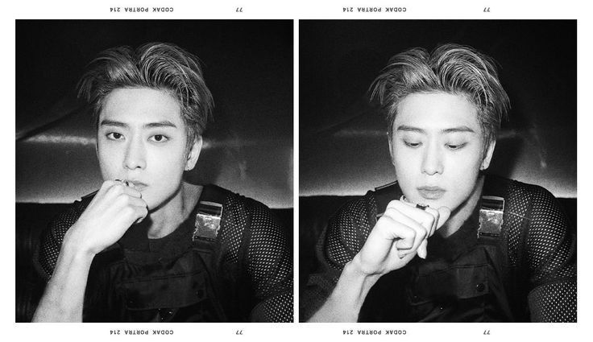

Halaman ini dibuat sebagai tugas Mata Kuliah Desain dan Pemrograman Web menggunakan Bootstrap
Jaehyun NCT adalah seorang penyanyi, rapper, penulis lagu, dan aktor asal Korea Selatan yang lahir pada 14 Februari 1997. Ia adalah anggota dari grup K-Pop NCT dan sub-unitnya, yaitu NCT U dan NCT 127, dan juga menjadi bagian dari sub-unit DOJAEJUNG. Jaehyun memulai debutnya dengan NCT U pada April 2016 dan kemudian menjadi anggota tetap NCT 127 pada Juli 2016.
Kunjungi profil lengkap dan media sosial resmi Jaehyun melalui tombol di bawah ini.
Pelajari Lebih Lanjut Kunjungi Instagram